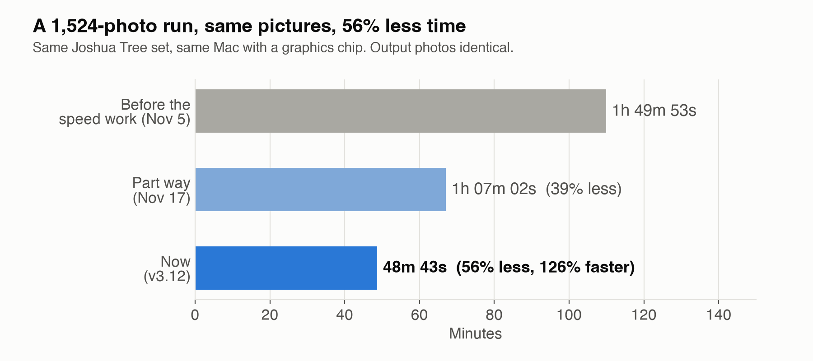
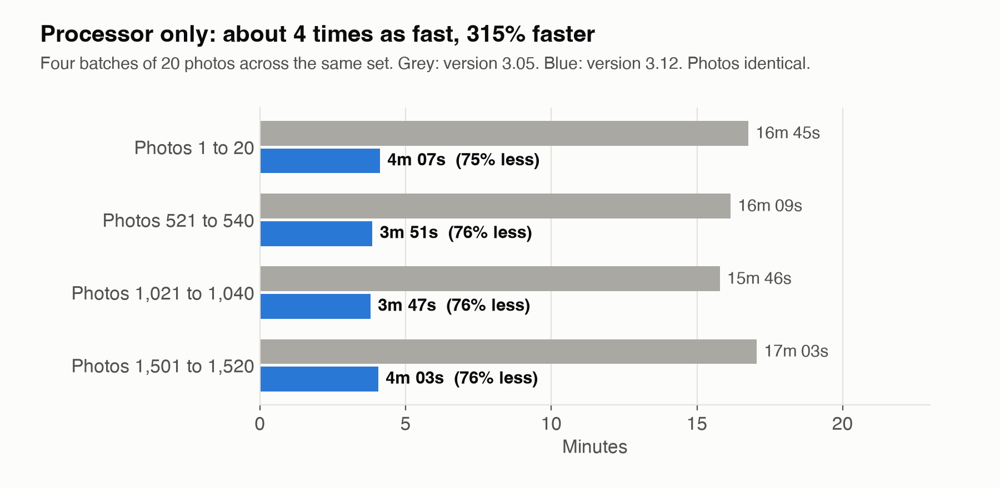
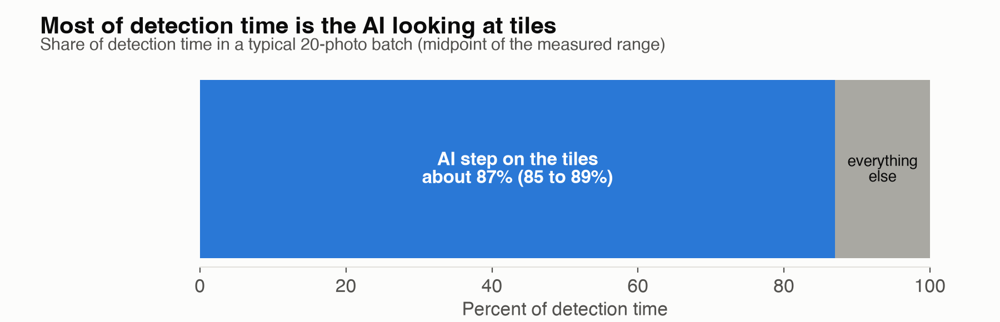
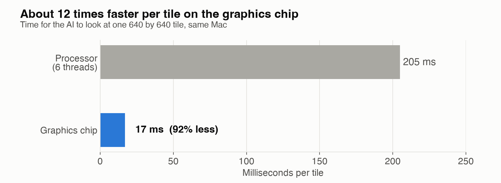
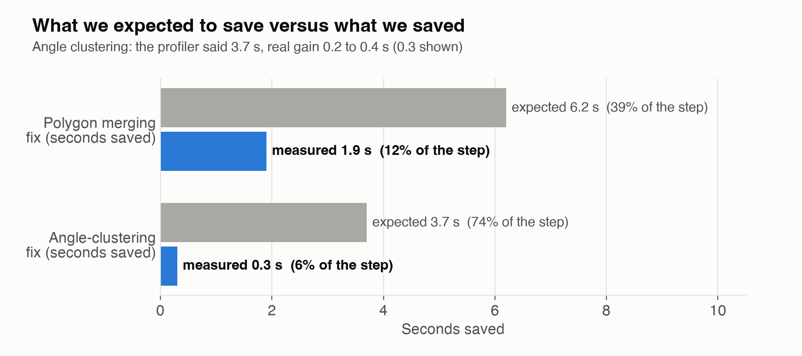
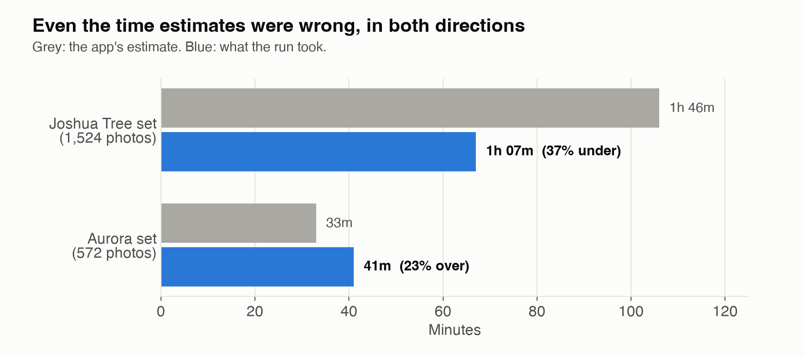
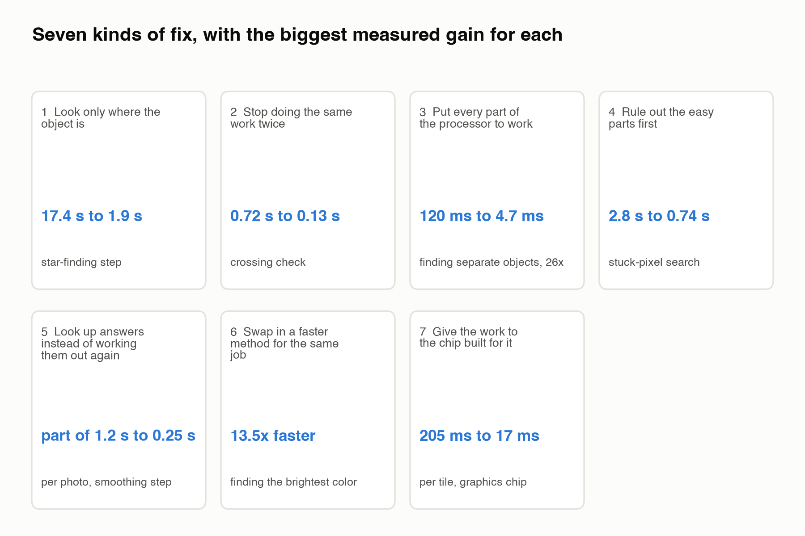
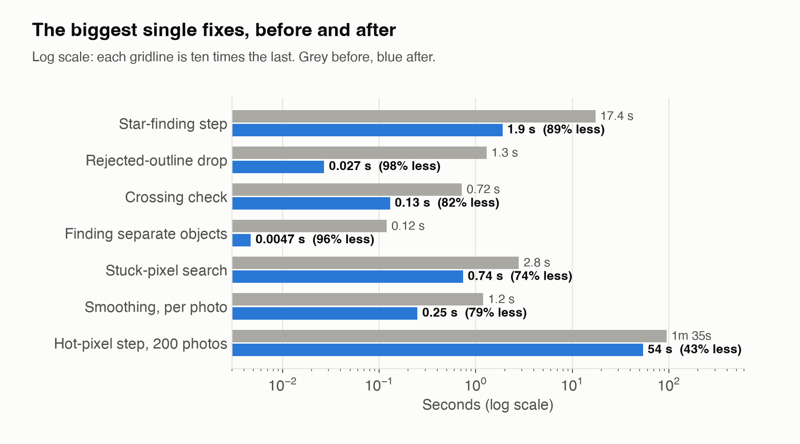
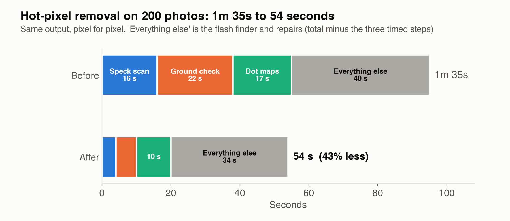
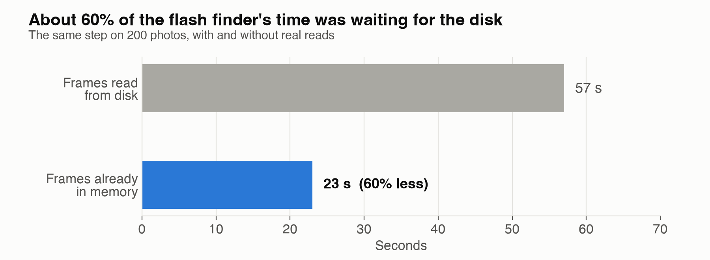

We got the app stable and added the features first. Then we spent a round of work on speed. A full run now takes 56% less time on a Mac with a graphics chip and about 76% less on the processor alone, and the photos come out identical. This note covers the graphics chip, and what we learned about finding slowdowns in any program.
A full run on a 1,524-photo Joshua Tree set went from 1h 49m 53s to 48m 43s on a Mac with a graphics chip (56% less time, or 126% faster), with identical photos. On the processor alone it is about 4 times as fast (315% faster). Most of the time is the AI looking at small tiles, and a graphics chip is the biggest speed-up. Everything else came from measuring first, keeping the output identical, and fixing one slowdown at a time. Each round saves less than the one before it, but there are always easy savings left in an area we haven't measured yet.
For a long time, speed wasn't our priority. First we wanted Star Trail CleanR to work, then to work reliably on all kinds of photos, and then to have the features photographers asked for. Speed was the next step, and it only made sense once those were done. You can't safely tune a program that's still changing underneath you.
The app is stable and has its features now, so we spent a round of work on speed. A full run on a 1,524-photo Joshua Tree set used to take 1h 49m 53s. After the speed work, the same run takes 48m 43s. That's 56% less time, or 126% faster, on a Mac with a graphics chip. The finished photos are identical: we compared 61 photos spread across the set, pixel for pixel.
Most runs are smaller than that. The average in our usage numbers is about 336 photos. On the first 340 photos of this set, the same Mac went from 33m 48s to 12m 56s, which is 62% less time, or 161% faster.
A test batch of 20 aurora photos, on a Mac with a graphics chip, went from 3m 06s to 1m 37s. That's 48% less time.

On a computer with no graphics chip, the gain is bigger. We timed four batches of 20 photos, spread across the same set, on the processor alone, with version 3.05 and with version 3.12. The four batches took 65m 45s with version 3.05 and 15m 50s with version 3.12. That's 75.9% less time, about 4 times as fast, or 315% faster, and the photos are identical. About 40% of the runs in our usage numbers are on the processor, so this matters to a lot of people.

There's a second, bigger speed-up for many people: a graphics chip doing the AI work. On one Mac it's about 12 times faster for that step alone. This note covers the graphics chip and everything we did around it. Most of it is about how we found the fixes, because that part works on any slow program.
The crossing-check reuse and the rejected-outline step shipped in version 3.11. The hot-pixel speed-up and Trail Smoothing shipped in version 3.12.
For every photo, Star Trail CleanR does three things. It finds the trails with an AI model. It repairs each trail with Star Bridge, which borrows the sky from the photos on either side. Then it fixes stuck pixels. Do that for hundreds of photos, each 20 megapixels or more, and you get a long run.
Most of the time goes to the first step. The AI doesn't look at a whole photo at once. It looks at 72 to 96 small tiles per photo, because it was trained on small tiles and small tiles are best for finding thin trails. In a typical batch, that step took 85 to 89% of the detection time.
We couldn't make that step faster by skipping tiles. To decide which tiles are safe to skip, we'd need something that finds trails, and that is the AI's own job. A weaker check would miss some trails, and a missed trail is the worst thing this app can do. So we left that step alone and went after everything around it.

A graphics chip (a GPU) is built to do the same small job on many pieces of data at once. The AI step is exactly that: the same model, run on 72 to 96 tiles, over and over.
On one Mac, a tile takes 17 milliseconds on the graphics chip and about 205 milliseconds on the same Mac's processor with six threads. That's 92% less time, or about 12 times faster, for the AI step.
A whole run gets a smaller boost than that, because the AI step is only part of a run. In the anonymous usage numbers photographers have shared with us, runs on a graphics chip are roughly two to three times faster than runs on the processor alone.
On Windows with an NVIDIA card, the app can install GPU support in one click. It's a 3 to 4 GB download and takes 5 to 15 minutes. If anything goes wrong, the NVIDIA setup guide walks through it.
We also tried three things on the AI step that didn't help. Half-precision math gave no gain, and it was slower on the Mac. Asking the model to batch tiles changed nothing, because the tiles already run as one batch. Changing the number of threads made no difference we could measure. We're listing them because they're useful to know. On this step, the easy gain was already in place.
With the graphics chip doing the heavy work, the rest of the run is what's left: repair, stuck pixels, and the new smoothing. Those steps still run on the processor. We haven't tried moving them to the graphics chip. The rest of this note is about those steps.

Before any speed work, we set one rule. A faster version has to give exactly the same output as the old one.
We check it the direct way. We run the old code and the new code on the same photos, then compare every output file. If a single pixel is different, the change doesn't ship until we know why.
That rule threw out some good ideas. One was skipping tiles or photos the AI probably doesn't need, for the reason above. Another was finding a blob's bounding box from its outline points. It was 14 times faster at that one calculation, but 3 of 1,800 test blobs came out slightly different, in the fifth decimal place, and it would have saved only about 1.5% of a busy batch. We couldn't prove the differences were harmless on every sky, so for 1.5% we didn't take the chance.
Four times, measuring told us something our guesses got wrong.
A line profiler (a tool that reports where a program spends its time) said one step took 3.7 of its 5.0 seconds in the angle-clustering code. We rewrote that code. The real saving was 0.2 to 0.4 seconds, which is 4 to 8% of the step, not the 74% the profiler suggested. Profilers add their own overhead to small steps that repeat many times, which makes those steps look bigger than they are. A stopwatch on the whole step, old version against new, doesn't have that problem.
We expected a polygon-merging fix to save about 6 seconds (15.7 down to 9.5, which is 39% less). It saved about 2 (16.0 down to 14.1, which is 12% less).
One speed-up looked obvious and made its step twice as slow. It was supposed to work inside a small box around each detection, but that box wasn't available there, so it fell back to working on the whole photo, on one thread. Only the before-and-after timing caught it.
And the app's own time estimate was off both ways. For the Joshua Tree set it predicted 1h 46m, and the run took 1h 07m, 37% less than predicted. For a 572-photo aurora set it predicted 33 minutes, and the run took 41, which is 23% more than predicted.
In each case we only found the real answer by timing it.


Every change that paid off fits one of seven patterns.


On the same Mac and the same 20-photo batch, we ended 48% below where we started. Three other test sets went from 1m 47s to 59 seconds, 1m 10s to 32 seconds, and 1m 00s to 25 seconds. That's 45%, 54%, and 58% less.
Speed work has diminishing returns. That means the average round of work saves less than the one before it. The early rounds found big savings, because the biggest slowdowns were easy to see once we measured. The later rounds on the same steps found 1 to 4% each.
That's not the whole story, because there are always easy savings left somewhere. Our recent hot-pixel work took off 43%, long after the early rounds, because nobody had timed that step closely before. Each new area we measure has easy savings in it. Once those are taken, the same area gives only a few percent.
A big percentage also isn't always a big saving. The step that drops rejected outlines got 98% faster, but it only had 1.3 seconds to give. The star-finding step got 89% faster and saved about 15 seconds, which was 35% of the whole batch. The little ones still matter. The app works through photos in batches of 20, so a 1,524-photo run has about 76 batches. If a step gets just one second faster per batch, that's about 1m 16s off the whole run. Many small savings add up to a big one.
The effort doesn't shrink the same way. A 2% saving can take as much testing as a 20% one, because it has to clear the same test: the photos must come out identical.
We're still testing different approaches. Some will save a few percent, and some won't work at all. We'll keep going while a saving is worth the care it takes to prove it changes nothing.
The newest work follows the same steps, so here it is start to finish.
Hot-pixel removal on 200 photos took 1m 35s. We wanted to know why.
First we put permanent timers on every sub-step, and made them print in the Star Log.
The timers showed something odd. One step, the flash finder, took 57 seconds. With the photos already in memory, it took 23. So about 60% of its time went to waiting for the disk.
Next we counted reads. The flash finder opened each photo about five times. The ground check was worse. It read photos one at a time, which took 22 seconds for about 4 seconds of real work.
The fix was to read a few photos ahead on several threads, so the next photo is already loading while the computer works on the current one. We also judge several photos at once, where the counts add up the same in any order. The whole step went from 1m 35s to 54 seconds, which is 43% less, and the output is identical.
The new Trail Smoothing step got the same treatment before it shipped. It took about 1.2 seconds per photo on a 20-megapixel JPEG. Now it takes about 0.25, which is 79% less, or about five times faster, with identical results on real photos. Three changes did it: a lookup table for the brightness curve, cutting each photo into bands that several threads work on at once, and reading the next photo while the current one is being smoothed.


We now follow one rule: every step that can take real time records when it ran, what it did, and how long it took. Those numbers go into the Star Log.
Before we added timers, 11 to 12% of the time inside one stage wasn't accounted for. Afterward it was 2 to 3%. The same timers found the recent hot-pixel problem within minutes.
If you have a slow program of your own, put a stopwatch around the slow part before you change anything. For us, the slow part was somewhere we didn't expect.
To see your own numbers, open the Star Log after a run. The timing block shows how long each step took on your computer.